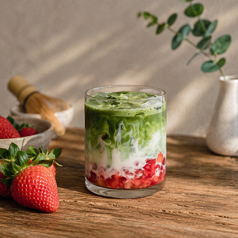
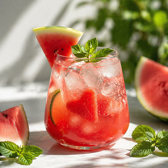
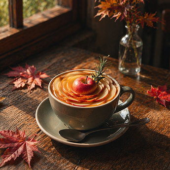
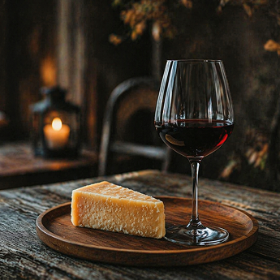

PAUSE LOG
Pause는 계절의 온도를 기록하는 공간입니다.
Now in Pause
지금 이 계절에만 만날 수 있는, Pause만의 시즌 음료입니다.
-

Spring, Quiet Bloom
봄에만 만날 수 있는 달콤 쌉싸름한 딸기 말차 라떼 한 잔을 즐겨보세요.
-

Summer, Soft Light
무더운 여름, 시원하고 달콤한 수박 주스 한 잔으로 잠깐의 휴식을 즐겨보세요.
-

Autumn, Deep Pause
따뜻한 애플 티 한 잔으로 차분히 가라앉는 가을에 어울리는 깊은 향을 느껴보세요.
-

Winter, Still Moment
프리미티보 와인의 묵직한 바디감과 달큰한 피니시로 따뜻한 겨울을 즐겨보세요.